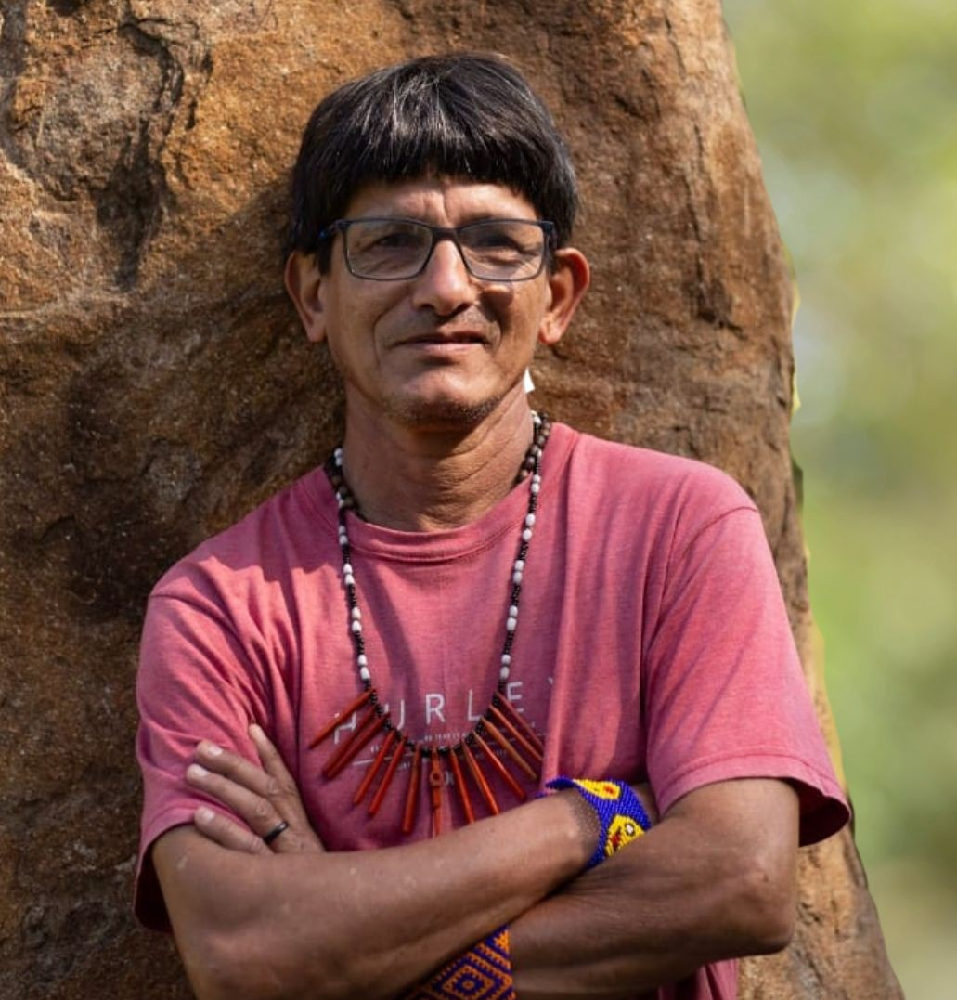
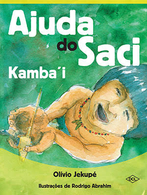
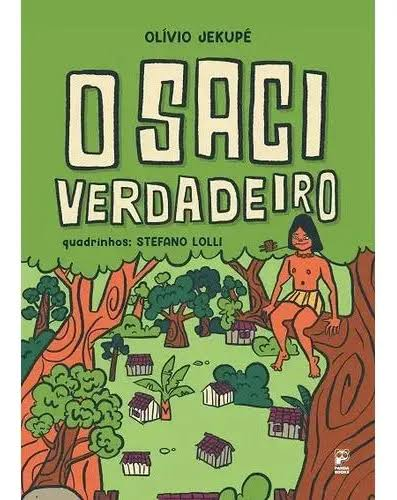

Olívio Jekupé

Biografia
Olívio Zeferino da Silva nasceu em Nova Itacolomi (PR), em 10 de outubro de 1965, e desde cedo teve contato com a cultura Guarani, através de sua mãe e de sua avó. Olívio também teve contato com indígenas da etnia Kaingang, na cidade de São Sebastião, no Paraná. Foi batizado de Jekupé (que significa mestiço), após participar do “batismo das almas” das aldeias Guarani Mbyá da região metropolitana de São Paulo (SP). Iniciou seus estudos em filosofia na PUC-PR e, posteriormente, na Universidade de São Paulo (USP), porém não concluiu.
Olívio participou da criação do Núcleo de Escritores e Artistas Indígenas (NEARIN) em 2004, ligado ao Instituto Indígena Brasileiro para a Propriedade Intelectual (INBRAPI). Começou a escrever literatura em 1984, de forma independente. Sua produção se aproxima do contexto escolar, publicando em 1999 uma obra própria, chamada “500 anos de angústia”, uma coletânea de poemas.
Principais Obras

Ajuda do Saci – Kamba’i(2006)
 500 anos de angústia
500 anos de angústia(1999)

O Saci verdadeiro(2000)
Literatura
Jekupé possui mais de 30 obras, abrangendo diversos gêneros, desde contos e poesias até romances e livros infantis, entre elas “Leópolis inesquecível” (1993), “Iarandu, o cão falante” (2002), “O Saci verdadeiro” (2000), “Ajuda do Saci – Kamba’i” (2006) e “O presente de Jaxy Jaterê” (2017). Através de uma literatura marcada pela cultura indígena, o escritor busca representar seu povo e contribuir para a desconstrução de estereótipos acerca dos povos indígenas.
Premiações
Não foram informadas premiações no material fornecido para este catálogo.
Complemento
Caso queira saber mais sobre o autor e suas obras, consulte fontes bibliográficas confiáveis e vídeos sobre o escritor.
Referências
As informações apresentadas foram retiradas de sites e trabalhos acadêmicos relacionados ao autor
Sites, entrevistas e vídeos
DORRICO, Julie. A literatura indígena tem o papel de conscientizar a sociedade – Entrevista com Olívio Jekupé. Revista Acrobata, 2020. Disponível em: Revista Acrobata.
GRUPO EDITORIAL GLOBAL. Olívio Jekupé – Biografia. Disponível em: Grupo Editorial Global.
TEMPLO CULTURAL DELFOS. Olívio Jekupé e a sua literatura nativa. Disponível em: Templo Cultural Delfos.
UOL ECOA. Breve história da literatura indígena contemporânea: pioneiros. 23 jul. 2020. Disponível em: UOL ECOA.
YOUTUBE. Reportagem sobre Olívio Jekupé e Jekaqua Mirim. Disponível em: Assistir ao vídeo.
Trabalhos acadêmicos sobre o autor
CARVALHO, Eliana Márcia dos Santos; SANTOS, Renata Lourenço dos. Literatura indígena: entre memórias. Educação em Revista, v. 39, 2023. DOI: 10.1590/0102-469838419. Disponível em: SciELO.
EDUCAÇÃO EM REVISTA. Artigo indicado na SciELO. Disponível em: https://www.scielo.br/j/edur/a/693WcLSZtTcQgZ4LHCpGbnR/?lang=pt.
LISBOA, Paulo Victor Albertoni. Ocupar territórios imaginários: a narrativa ficcional de Olívio Jekupé. Tempo da Ciência, [S. l.], v. 24, n. 47, 2017. DOI: 10.48075/rtc.v24i47.17906. Disponível em: https://saber.unioeste.br/index.php/tempodaciencia/article/view/17906. Acesso em: 10 out. 2026.
ROSA, Francis Mary Soares Correia da. A menoridade literária em Olívio Jekupé. Estudos de Literatura Brasileira Contemporânea, n. 53, 2018. DOI: 10.1590/2316-40185313. Disponível em: SciELO.
ROSA, Francis Mary Soares Correia da. Espelho de duas faces: a literatura indígena de Olívio Jekupé na produção de alteridades sobre o não-índio. Revista Crioula, [S. l.], n. 14, 2014. DOI: 10.11606/issn.1981-7169.crioula.2014.75943. Disponível em: https://revistas.usp.br/crioula/article/view/75943. Acesso em: 10 out. 2026.
SOUKI, Jacqueline Diniz Oliveira. Memória, consciência e literatura indígenas: vozes reveladas. Educação em Revista, v. 39, 2023. DOI: 10.1590/0102-469842057. Disponível em: SciELO.
TROQUEZ, Sonia Ferreira dos Santos. Literatura nativa: análise das obras ajuda do saci Kamba’i e o saci verdadeiro, de Olívio Jekupé. 2021. 132 f. Dissertação (Mestrado em Letras) - Faculdade de Comunicação, Artes e Letras, Universidade Federal da Grande Dourados, Dourados, MS, 2021.